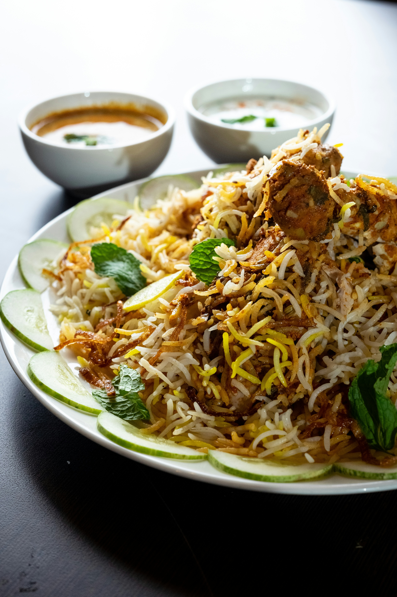

Chicken Biryani

Description
The recipe described below is a complete recipe of a Chicken Biryani and can be made easily with the ingredients you have lying around in your kitchen. In a total of 1 and half an hour ( 1 hour prep time , 25 mins cook time ) you can make this in your house using just a simple pot ( here , we will be using pressure cooker)
Biryani is one of the most popular rice dishes and traditionally it is cooked adapting the process of dum pukht, meaning "steam cooked over low fire". While it was originated from the Persian(modern-day Iran), it was perfected in India and is currently enjoyed by the people around the globe.
The traditional process of Chicken Biryani starts by marinating meant in yogurt along with spices and herbs. The raw marinated meat is layered at the bottom of a wide pot followed by another layer of par cooked basmati rice, herbs, saffron infused milk, fried onions and ghee or attar (edible essential oil). The pot is sealed to trap the steam and is dum cooked on low heat for the most tender and flavorsome dish.
Ingredients
- Basmati rice
- Yogurt
- Chicken Meat ( Chicken with bones , and big cut pieces are used , but if you prefer boneless over bone meat , feel free to use them.)
- Whole spices - Shahi jeera, bay leaves, star anise, cloves, and green cardamom pods.
- Ginger Garlic paste
- Ground spices - Turmeric, kashmiri red chilli powder, Biryani Masala( Garam Masala can be used in place of biryani masala if unavailable)
- Yellow onion (Thinly sliced yellow onion caramelized in ghee)
- Ghee ( preferably homemade one )
- Herbs - Fresh mint and cilantro
Complete Steps to make Chicken Biryani
Preparation-Marination
- This recipe needs half kg chicken. Make few slits on all the chicken pieces and add to a large bowl. Then add:
- 3 tablespoons plain yogurt (Indian curd)
- 1 1/4 tablespoons ginger garlic paste
- 1/2 to 1 tablespoon garam masala( or biryani masala)
- 1/2 teaspoon of salt
- 1/4 teaspoon ground turmeric
- 1/2 to 1 teaspoon red chili powder
- 1 tablespoon lemon juice(optional)
- Mix everything well and marinate teh chicken, Cover and set this aside for 1 hour. You can also rest it overnight in the fridge.
- Meanwhile add 2 cups basmati rice to a large pot and rinse it at least thrice. drain and soak in fresh water for 30 mins. Drain to a colander after 30 mins. Optional- Soak a pinck of saffron strands in 2 tablespoons of hot milk.
Cook Chicken
- Heat ghee or oil in a heavy bottom pot or pressure cooker. For spices , use:
- 1 bay leaf
- 4 green cardamoms
- 6 cloves
- 1 inch cinnamon piece
- 1 star anise
- 3/4 teaspoon shahi jeera ( caraway seeds)
- 1 srand mace (optional, omit if you don't like)
- Add thinly sliced onions. On medium heat, fry them stirring often until uniformly light brown.
- Cook the unions until they are golden brown colored. Do not burn them as they will leave a bitter taste.
- Add marinated chicken and saute until it becomes pale for 5 minutes.
- Lower the flame completely. Cover and cook until the chicken is soft, tender and completely cooked.
- Check if the chicken is cooked by pricking with a fork. It has to be just cooked and not overdone. Evaporate excess moisture left in the pot by cooking further without the lid.
- Taste test and add more salt if needed.
Make Chicken Biryani
- Now Add:
- More salt as per need. ( I added 1/4 more salt)
- 1/4 cup plain yogurt( Indian curd)
- 1 teaspoon garam masala ( or biryani masala)
- 1/4 to 1/2 teaspoon red chilli powder (optional)
- 1 slit green chilli pepper ( optional)
- 2 tablespoons chopped mint leaves (pudina)
- Mix everything well, Spread it evenly in a single layer.
- Layer drained rice all over the chicken. To a separate pot, pour 3 cups water and add 1/4 to 1/2 teaspoon salt. Stir and taste the water. It must be slightly salty. Bring the water to a rolling boil. Pour 2 cups of this hot water across the sides of the cooker or pot. Pour rest of the water over the rice gently.
- Level the rice gently on top. Add 2 tablespoons more mint leaves. Do not mix up everything, the taste of the biryani cooked in the shown method is good. Optionally you can sprinkle 2 tablespoons fried onions & saffron soaked milk.
- Finally cover the pot or cooker.
If cooking in a pot, cook on a medium heat until the rice is cooked completely. It takes me exactly 15 mins, from the time the water starts to boil in the pot. It may be different for you and it depends on your cookware, burner size and the quality of rice.
If cooking in a cooker, cook until you hear 1 whistle. Later remove the cooker from the hot burner to stop cooking further.
- When the pressure releases naturally, open the lid, Gently fluff up with a fork.
And there you have it. You have created yourself a perfect Chicken Biryani just like the restaurants that you can make anytime easily to fill your spicy cravings.
Our other recipes:
Bibimbap
Pizza